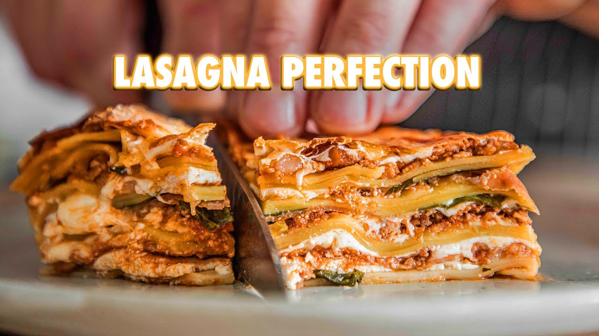

Lasagna

For the original recipe on Youtube by the brilliant J.W:
Video recipe
Description
I'm talking homemade lasagna with fresh pasta, fresh ground meat (ground at home),
homemade sauce that will make you cry (in a good way).
This is the only recipe you need.
It's lasagna, you just can't go wrong with it.
Ingredients
- 1lb (450g) ground beef (chuck)
- 1 lb (450g) ground pork (pork shoulder)
- 1 medium sized onion
- 1 rib of celery
- 1 medium sized onion
- 2 carrots
- 2 cloves garlic thinly sliced (I also added this and forgot to mention it)
- 3 Tbsp (60g) tomato paste
- 1 cup (236ml) white wine
- 1.5 cups (354ml) chicken stock
- 1- 17.6 oz(500g) container of crushed tomatoes
- Salt to taste
Homemade Fresh Pasta:
- 3 cups (480g) all purpose flour (or 00 tipo)
- 5 whole eggs
- 1/2 tsp (3g) fine sea salt
- Water if needed
For assembly you'll need:
- A 16oz tub whole milk ricotta
- Parmigiana reggiano
- *optional* fontina
- Fresh mozzarella (two 500g balls should do)
- Fresh basil
- 13 slices of prosciutto di parma
- Lasagna pasta sheets
Steps:
- To make the sauce, take 1lb of ground beef and 1lb of ground pork and mix together in a bowl.
- Then in a large heavy-bottomed pot over medium-high heat, add in enough oil to coat the bottom. Take about half of your meat mixture and pat it into a large thin patty.
Sear your meat in the pot for about 2-3 minutes on both sides. Repeat that until you use all of your meat. Remove meat from the pan and set it off to the side.
- In that same pan, cook off 4 ounces of guanciale or pancetta over medium heat until it releases its fat and fried itself in it. Once that’s done frying, add to that pot 1 medium onion
finely diced, 1 finely diced celery, and 2 finely diced carrots. Give it a stir and let it saute over medium heat for about 2 minutes or until all the vegetables turn translucent.
- Then add in 3 tablespoons of tomato paste. Stir and let it cook in the pot until it begins to stick to the bottom. Add in 1 cup of white wine or water and give it a stir.
Let the mixture simmer until it’s reduced by about half. Then add in 1 1/2 cups of chicken stock, 17.6 ounces of crushed tomatoes, and your cooked meat.
Allow that to simmer for about 1-2 hours or until it’s reduced and mostly meaty.
- To make your own pasta, add 3 cups of all-purpose flour, 1/2 teaspoon of fine sea salt into a bowl and whisk together. Make a well in the flour mixture and add in 5 whole eggs.
Start whisking together with a fork, slowly bringing in the flour from the sides. Once it starts to come together, begin kneading.
- Once you get a nice cohesive dough, knead until it’s relatively smooth. Wrap it in plastic wrap and let it rest at room temperature for about an hour.
- After your dough has rested, divide into 4 equal parts and flatten each piece into a rough oveal. Run it through a pasta roller at the thickest setting; making sure to dust it with flour.
Keep rolling that dough on a thinner and thinner setting one at a time until you reach the final setting.
- Bring a large pot of water to a boil and season it generously with salt.
-
- For fresh noodles, blanch them in the water for about 10 seconds and pull them out immediately.
- If you’re using premade noodles, cook your noodles in the pot until it’s very very al dente.
- To assemble your lasagna, first grease a 9x13 inch baking pan with butter. Apply a very thin layer of sauce in the bottom to prevent sticking. Then layer your lasagna by placing a layer
of pasta sheets, ½ cup of whole milk ricotta, fresh basil leaves, prosciutto di parma, your meat sauce and then a layer of parmigiano-reggiano, fontina and mozzarella.
Repeat this layering process until the pan is full.
- Top your lasagna with cheese and place on a baking sheet. Put your lasagna in the oven preheated to 350 degrees Fahrenheit and cook for one hour or until nice and brown.
Remove from the oven and let it rest for 20-25 minutes.